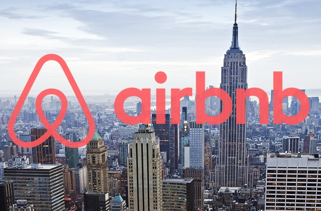

Programa de venda assertiva de cartões
Desenvolvi um modelo de Machine Learning para segmentar clientes com base em características de compra, identificando o tipo ideal de cartão a ser ofertado, com o objetivo de criar um programa de fidelidade que aumente a receita da empresa ao alinhar produtos às necessidades dos clientes
Ferramentas utilizadas:
- Git, Gitlab, Github.
- Python, Pandas, Matplotlib e Seaborn.
- Jupyter Notebook.
- RandomForest, K-Means.
- Streamlit Python framework web.
Score de crédito baseado no comportamento de compra
Construi um modelo preditivo para calcular o score de clientes, auxiliando na definição de limites de crédito e personalização de produtos financeiros, com o objetivo de apoiar decisões bancárias relacionadas a crédito, empréstimos e consórcios, considerando o comportamento de compra dos clientes.
Ferramentas utilizadas:
- Git, Gitlab, Github.
- R, dplyr e tidyr.
- R Studio.
- randomForest, caret e gbm.
- Shiny.
Dashboard de análise de desempenho de equipes de atendimento ao cliente
Desenvolvi um dashboard no Power BI para monitorar o desempenho das equipes de atendimento, destacando métricas como total de chamados, resoluções concluídas e cumprimento de SLAs.
As visualizações incluem análises detalhadas por tempo de resolução, tipo de problema e áreas críticas, como chamados extrapolados e SLAs não atendidos. O objetivo foi fornecer insights claros e práticos para melhorar a eficiência do atendimento e a satisfação dos clientes.
Ferramentas utilizadas:
- Workspace Power BI.
- Power BI.
- Power Query.

Análise de expansão de negócios do Airbnb em Nova York
Realizei uma análise exploratória e descritiva usando Python para identificar regiões estratégicas para a expansão de negócios do Airbnb em Nova York.
A análise respondeu a perguntas do CEO sobre localização, valores de aluguel, imóveis mais procurados e outros insights para apoiar o marketing e as vendas. O objetivo foi oferecer informações detalhadas para decisões estratégicas de expansão, alinhadas às necessidades do mercado local.
Ferramentas utilizadas:
- Python, Pandas, Matplotlib.
- Mapas interativos com Plotly e Folium.
- Seaborn.
Dashboard de KPIs estratégicos para tomada de decisão
Desenvolvi um dashboard interativo usando Python e Streamlit para consolidar KPIs estratégicos, permitindo ao CEO consultar métricas críticas em tempo real, com o objetivo de facilitar a análise de indicadores essenciais e otimizar a tomada de decisões com base em dados confiáveis e acessíveis.
Ferramentas utilizadas:
- Python, Pandas, Numpy.
- Mapas interativos com Plotly e Folium.
- Streamlit Python framework web.

Conjunto de dashboards para identificar pontos-chave da empresa
Criei um conjunto de dashboards utilizando Python para responder perguntas estratégicas do CEO, organizando informações críticas para ações empresariais rápidas e eficazes, com o objetivo de disponibilizar insights de maneira visual e acessível, focados em áreas prioritárias da empresa.
Ferramentas utilizadas:
- Python, Pandas, Matplotlib.
- Mapas interativos com Plotly e Folium.
- Streamlit Python framework web.